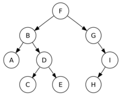

TAI 2017. Bloque II. Tecnología básica - La web de emijrp
| Oposiciones | |
|---|---|
| Apuntes TAI 2017 | Bloque I · Bloque II · Bloque III · Bloque IV |
| Apuntes TAI 2018 | Bloque I · Bloque II · Bloque III · Bloque IV |
| Exámenes | Análisis de exámenes |
El Bloque II. Tecnología básica de las Oposiciones a TAI 2017 se compone de 5 temas.
| Tabla de contenidos |
|---|
|
1. Tema 1: Informática básica 1.1 Sistemas numéricos 1.1.1 Conversión de decimal a otros sistemas 1.1.2 Conversión de otros sistemas a decimal 1.2 Arquitecturas de ordenador 1.3 Componentes internos 2. Tema 2: Periféricos 2.1 Elementos de impresión 2.2 Elementos de almacenamiento 2.3 Elementos de visualización 2.4 Elementos de digitalización 3. Tema 3: Tipos abstractos y Estructuras de datos 3.1 Estructuras de datos 3.2 Sistemas de ficheros 3.3 Algoritmos 3.4 Formatos de ficheros 3.4.1 Windows 3.4.2 Linux 3.4.3 Otras 4. Tema 4: Sistemas operativos 4.1 Android 4.2 GNU/Linux 4.3 Microsoft Windows 5. Tema 5: Bases de datos 5.1 Relacionales 5.2 Orientados a objetos 5.3 NoSQL 6. Fuentes 7. Referencias |
Tema 1: Informática básica
Informática básica. Representación y comunicación de la información: elementos constitutivos de un sistema de información. Características y funciones. Arquitectura de ordenadores. Componentes internos de los equipos microinformáticos.
Pregunta relacionada en
2016 (IL) 2016 (PI) 2015 (IL)
Un bit es la unidad básica de información que se utiliza en informática. Puede tener dos valores (dos estados), representados como 0 y 1.
Un byte son 8 bits, llamado también octeto. Un nibble son 4 bits, un cuarteto, y se utiliza en el sistema hexadecimal (0 a F, 16 valores, 2^4).
Bit (b) < Byte (B) < Kilobyte (KB) < Megabyte (MB) < Gigabyte (GB) < Terabyte (TB) < Petabyte (PB) < Exabyte (EB) < Zettabyte (ZB) < Yottabyte (YB).
Cuando la B es mayúscula se refiere a Byte (octeto, 8 bits), cuando la b es minúscula se refiere a bit. De modo que 8 Gbit/s son 1 GB/s.
Sistemas numéricos
Pregunta relacionada en
2016 (IL) 2016 (PI)
- Binario: base 2, solamente se utilizan el 0 y el 1.
- Octal: base 8, se utilizan del 0 al 7.
- Decimal: base 10, se utilizan del 0 al 9.
- Hexadecimal: base 16, se utilizan del 0 al 9 y de la A a la F.
Conversión de decimal a otros sistemas
Para convertir un número decimal a binario, se divide el número entre 2 sucesivamente. Los restos colocados a la inversa componen el número en binario.
- 8 / 2 = 4. Resto 0.
- 4 / 2 = 2. Resto 0.
- 2 / 2 = 1. Resto 0.
- 1 / 2 = 0. Resto 1.
- 8 en decimal es 1000 en binario.
Para convertir un número decimal a octal se utiliza el mismo método.
- 34 / 8 = 4. Resto 2.
- 4 / 8 = 0. Resto 4.
- 34 en decimal es 42 en octal.
Para convertir un número decimal a hexadecimal, primero convertimos de decimal a binario y luego de binario a hexadecimal.
- 183 / 2 = 91. Resto 1.
- 91 / 2 = 45. Resto 1.
- 45 / 2 = 22. Resto 1.
- 22 / 2 = 11. Resto 0.
- 11 / 2 = 5. Resto 1.
- 5 / 2 = 2. Resto 1.
- 2 / 2 = 1. Resto 0.
- 1 / 2 = 0. Resto 1.
Ahora pasaríamos 10110111 a hexadecimal agrupando de cuatro en cuatro dígitos desde la derecha. 1011 = 11 = B, 0111 = 7. De modo que 183 en decimal es B7 en hexadecimal.
En hexadecimal se usan las siguientes letras: A = 10, B = 11, C = 12, D = 13, E = 14, F = 15.
Conversión de otros sistemas a decimal
Para convertir un número binario a decimal, cada digito binario es multiplicado por la base 2 elevada a la posición que ocupa el digito contando desde la derecha empezando por 0.
- 101 = 1*2^2 + 0*2^1 + 1*2^0 = 4 + 0 + 1 = 5
- 11011 = 1*2^4 + 1*2^3 + 0*2^2 + 1*2^1 + 1*2^0 = 16 + 8 + 0 + 2 + 1 = 27
Para convertir un número octal a decimal, se utiliza el mismo método que para binario a decimal, pero con base 8.
- 356 = 3*8^2 + 5*8^1 + 6*8^0 = 192 + 40 + 6 = 238
Para convertir un número hexadecimal a decimal, igualmente pero con base 16.
- A0D = A*16^2 + 0*16^1 + D*16^0 = A*256 + 0*16 + D*1 = 10*256 + 0 + 13*1 = 2560 + 13 = 2573
- 7B2 = 7*16^2 + B*16^1 + 2*16^0 = 7*256 + B*16 + 2*1 = 7*256 + 11*16 + 2*1 = 1792 + 176 + 2 = 1970
Arquitecturas de ordenador
Según la estructura:
Pregunta relacionada en
2016 (IL) 2016 (PI) 2015 (IL)
- Arquitectura von Neumann: consta de una unidad central de proceso (CPU), compuesta de una Unidad Aritmético Lógica (ALU, con registros del procesador, acepta operandos) y una unidad de control (UC, con registros de instrucciones y contador de programa). Además de memoria para almacenar datos e instrucciones y mecanismos de entrada y salida. No pueden darse a la vez una búsqueda de instrucciones y una operación de datos ya que comparten el mismo bus. La unidad de control indica qué operación ejecutar en cada momento.
- Arquitectura Harvard: cuentan con conjunto de direcciones y buses separados para instrucciones y datos.
La arquitectura von Neumann es más sencilla que la Harvard, que es más moderna. Ambas son sistemas de programas almacenados, es decir, mantiene las instrucciones de programa y los datos en una memoria de lectura-escritura.
Según el conjunto de instrucciones:
- Arquitectura CISC: estos microprocesadores cuentan con un conjunto de instrucciones amplio capaces de realizar operaciones complejas. Los operandos de estas operaciones pueden estar en memoria o en registros internos. Es acrónimo de Complex Instruction Set Computer (Ordenador de Conjunto de Instrucciones Complejo). Son anteriores a los RISC. Ejemplos: Motorola 68000, Zilog Z80, Intel x86, AMD x86-64.
- Arquitectura RISC: microprocesadores con instrucciones de tamaño fijo. Conjunto de instrucciones reducido y que realizan operaciones simples. Solo las instrucciones de carga y almacenamiento acceden a memoria, a diferencia de CISC. Es acrónimo de Reduced Instruction Set Computer. Facilita la segmentación y el paralelismo. Ejemplos: PowerPC, DEC Alpha, MIPS, ARM, SPARC.
- Arquitectura SISC: un subtipo de RISC, orientada al procesamiento en paralelo. Utiliza la tecnología VLSI. Es acrónimo de Simple Instruction Set Computing.
Pregunta relacionada en
2016 (IL)
Según el número de núcleos:
- Un núcleo: el microprocesador cuenta con una única unidad de procesamiento.
- Varios núcleos: cuenta con varias unidades de procesamiento que leen y ejecutan instrucciones a la vez, aumentando la velocidad de aquellos programas que estén adaptados al procesamiento en paralelo.
Pregunta relacionada en
2015 (IL)
Los algoritmos de planificación son aquellos que gestionan qué procesos se ejecutarán en el procesador en cada momento y en qué orden, evitando que un proceso monopolice el uso del procesador.
Los tres estados posibles de un proceso son: listo, bloqueado y en ejecución.
Algoritmos de planificación:
- FIFO o FCFS: First In, First Out o First Come, First Served. Es el más sencillo, simplemente se encolan los procesos por orden de llegada y el primero en llegar es ejecutado. Cuando éste termina, se procede con el siguiente de la cola.
- Round Robin: utiliza time-slices o quatums, que son intervalos de tiempo asignados a cada proceso. Si un proceso agota su tiempo, se ejecuta el siguiente, y el proceso queda a la espera en cola para usar su próximo quantum.
- Selfish Round Robin: utiliza dos colas, una para procesos nuevos y otra para procesos antiguos. Da prioridad a los antiguos sobre los nuevos.
- SJF: Shortest Job First, el proceso más corto es el que se ejecuta primero. Tiene el problema que los procesos largos pueden quedarse indefinidamente en cola si siguen llegando procesos cortos.
- SRTF: Short Remaining Time First, el proceso que le quede menos tiempo por ejecutar, entrará al procesador. Es decir, si mientras se ejecuta un proceso, otro proceso que se quedó a medias (bloqueado) ya está listo para continuar, le quitará el sitio al proceso actual.
Componentes internos
Los componentes internos básicos de un ordenador son:
Pregunta relacionada en
2015 (IL) 2015 (PI)
- Disco duro: dispositivo de almacenamiento de datos que emplea un sistema de grabación magnética. Se compone de uno o más platos que giran en un mismo eje, y sobre éstos se sitúa un cabezal para lectura-escritura que no toca la superficie. Se trata de memoria no volátil, al contrario que la memoria RAM. La interfaz puede ser IDE (ATA/PATA), SCSI o más recientemente SATA. Una pista es cada círculo concéntrico del disco, un sector es una porción de cada pista. Un conjunto de sectores es un clúster. El tiempo medio de acceso es lo que tarda la aguja en situarse en la pista y sector deseado, siendo la suma del tiempo medio de búsqueda (situarse en pista), tiempo de lectura/escritura y la latencia media (situarse en sector).
- Discos SSD: SSD es el acrónimo de Solid State Drive, disco de estado sólido. Son discos más rápidos que los discos mecánicos clásicos y su coste es superior.
- Memoria RAM: memoria en la que se cargan las instrucciones y datos en ejecución. Es de mayor velocidad que los discos duros aunque su capacidad es mucho menor. La RAM es de menor velocidad que los registros del procesador y que las caché por niveles. Cuando el ordenador arranca realiza un breve test sobre la RAM, aunque existen tests avanzados y exhaustivos como MemTest86+ para encontrar fallos de hardware. Tipos: SDR SDRAM, RDRAM, DDR SDRAM, DDR2 SDRAM, DDR3 SDRAM, DDR4 SDRAM.
- Microprocesador: es el circuito integrado que ejecuta los programas, a través de sus instrucciones en bajo nivel, realizando operaciones aritméticas y lógicas sobre los datos. Puede estar compuesto de uno o varios núcleos. Se conecta a la placa base a través de un zócalo y sobre él se coloca un disipador de calor, pasta térmica y ventilador.
- Placa base: es el circuito en el que se conectan los demás componentes del ordenador en los respectivos bancos o zócalos. Suelen tener múltiples ranuras para tarjetas PCI, memoria RAM, CPU, discos y lectoras SATA/IDE. Externamente también dispone de múltiples puertos (serie, paralelo, PS/2, USB, RJ-45, VGA, jacks). Cuenta con una memoria CMOS para la fecha, hora y configuración básica, además de la BIOS.
- Tarjeta de expansión: tarjeta que realiza una tarea específica y que se conecta en una ranura determinada, generalmente a ranuras PCI (Peripheral Component Interconnect). Antiguamente eran ranuras ISA. También hay ranuras más veloces como la PCI-Express. Una placa base que tenga integrada una gráfica, puede perfectamente aceptar una tarjeta gráfica que mejore las capacidades integradas de la placa.
- Tarjeta gráfica: tarjeta de expansión enfocada a procesar los datos referentes a operaciones gráficas, principalmente aquellos destinados a ser visualizados en el monitor. La unidad de procesamiento gráfico se conoce como GPU. Funcionalidades extra de estas tarjetas son la captura de vídeo, sintonización de televisión, etc. Algunas tarjetas soportan más de un monitor a través de varios puertos. Una tarjeta gráfica discreta es aquella que se inserta en la placa base, a diferencia de las que son integradas y van soldadas a la placa.
- Tarjeta de sonido: dispone de puertos de entrada y salida para audio, generalmente jacks para altavoces/auriculares, micrófono y otros.
- Tarjeta de red: permite contectar el ordenador a una red Ethernet (lo más habitual) para compartir recursos o acceder a Internet. Algunas tarjetas de red admite WIFI.
Pregunta relacionada en
2016 (IL) 2015 (PI)
Las memorias no volátiles no necesitan energía para mantener la información almacenada. Ejemplos: CD/DVD, cintas magnéticas, disquetes, discos duros, ROM (read-only memory) y sus variantes (ROM-CMOS), NVRAM (non-volatile RAM), etc.
Las memorias volátiles pierden la información al interrumpirse la corriente eléctrica. Ejemplos: RAM (random access memory), SRAM (static RAM), DRAM (dynamic RAM), RDRAM (Rambus DRAM), SDRAM, todas las DDR. Las estáticas no requieren refresco para mantener los datos en memoria mientras que las dinámicas sí.
Pregunta relacionada en
2015 (PI)
La capacidad de una memoria de X palabras y cada palabra con un ancho de Y bits o bytes, se calcula multiplicando ambas cifras.
Tema 2: Periféricos
Periféricos: conectividad y administración. Elementos de impresión. Elementos de almacenamiento. Elementos de visualización y digitalización.
Los puertos son interfaces entre un ordenador y otros ordenadores o periféricos.
Pregunta relacionada en
2016 (IL)
Un periférico es un dispositivo que se conecta a un ordenador a través de un puerto y que realiza alguna tarea. A grandes rasgos, puede haber periféricos de entrada (teclado, ratón, micrófono, escáner, lector de huellas) y periféricos de salida (pantalla, altavoz, impresora).
Pregunta relacionada en
2015 (IL)
Tipos de USB:
- USB 1.0: Desde 1.5 Mbit/s hasta 12 Mbit/s.
- USB 2.0: Hasta 480 Mbit/s (35 MB/s).
- USB 3.0: SuperSpeed USB (SS). Hasta 5 Gbit/s (625 MB/s), unas 10 veces más rápido que USB 2.0. El conector es de color azul.
- USB 3.1: Hasta 10 Gbit/s (1250 MB/s). Dos veces más rápido que USB 3.0.
El conector plano USB es el estándar A. El estándar B es el cuadrado. Ambos tienen 4 pines (voltaje, data-, data+ y tierra).
Pregunta relacionada en
2016 (PI) 2015 (IL)
Otros puertos:
- eSATA: External SATA.
- Ethernet:
- Firewire: Diseñado por Apple. Desde 400 Mbit/s (50 MB/s) hasta 3200 Mbit/s (400 MB/s). El estándar es IEEE 1394.
- HDMI / DVI / VGA:
- Jack:
- SCSI: generalmente para discos duros y cintas. Acrónimo de Small Computer System Interface.
- PS/2: conector de 6 pines para teclado y ratón. Electrónicamente son similares, pero pueden no ser intercambiables por usar distintos comandos (violeta teclado, verde ratón).
- Puerto paralelo: envían varios bits de datos cada vez, por ello cuentan con varias líneas de datos. Se estandarizó como IEEE 1284 y fue el habitual para impresoras hasta que llegó el USB.
- Puerto serie: permiten transmitir un bit cada vez solamente, a diferencia del puerto paralelo.
- Thunderbolt: creado por Intel y Appel. Thunderbolt 1 hasta 10 Gbit/s, Thunderbolt 2 hasta 20 Gbits/s, Thunderbolt 3 hasta 40 Gbit/s.
Pregunta relacionada en
2015 (IL)
Tipos de teclado:
- QWERTY: Es la distribución de teclado más común.
- QWERTZ / QWERTZU: Utilizado en regiones germanohablantes. Intercambia la Z e Y con los teclados QWERTY, ya que la Z es más frecuente en alemán que la Y, y la T y Z aparecen juntas en palabras alemanas.
- AZERTY: Utilizado en páises francófonos.
- HCESAR: Utilizado en Portugal durante algún tiempo. Después pasaron al QWERTY.
- Dvorak: Tiene como objetivo ser más ergonómico para reducir los errores en mecanografía.
Elementos de impresión
Las impresoras pueden ser:
Pregunta relacionada en
2016 (IL)
- De impacto: matriciales (o de agujas), de margarita, de bola, de línea. Limitadas a texto o gráficos muy básicos. Monocromáticas. Se golpea el papel y el impacto transfiere la tinta.
- Sin impacto: térmicas (agujas calientes recorren papel termosensible: cajeros), de inyección o chorro de tinta (proyección de gotas de tinta), sublimación de tinta (se usa calor para transferir la tinta), láser.
Según el método de impresión:
- Carácter a carácter: matriciales, inyección, térmicas, margarita.
- Línea a línea: cinta, cadena, tambor.
- Página a página: láser.
Las de inyección de tinta pueden ser térmicas o piezoelétricas.
Lenguajes de descripción de página:
- PostScript: creado en 1982 en Adobe Systems.
- Printer Command Language (PCL): desarrollado por Hewlett Packard en 1980 para impresoras de chorro de tinta. Actualmente hay 6 versiones, hasta PCL6.
- HPGL: para plóter. Existe una segunda versión HPGL2.
Las conexiones más frecuentes son con puerto paralelo o USB. Las impresoras en red utilizan el RJ-45.
Elementos de almacenamiento
Tipos de interfaces:
- Parallel ATA (PATA): Diseñado por Western Digital en 1986, como interfaz para conectar discos duros, llamado al principio Intergrated Drive Electronics (IDE). Su extensión ATAPI permite lectoras de CD.
Pregunta relacionada en
2016 (IL)
- Serial ATA (SATA): Reemplaza a PATA. Sirve para discos duros, lectoras de CD y discos de estado sólido SSD.
- SATA 1.0: 1.5 Gbit/s (150 MB/s) SATA-150.
- SATA 2.0: 3 Gbit/s (300 MB/s) SATA-300.
- SATA 3.0: 6 Gbit/s (600 MB/s) SATA-600.
Pregunta relacionada en
2016 (IL) 2015 (IL) 2015 (PI)
Tipos de RAID:
- RAID 0: Los datos se distribuyen entre dos o más discos, sin información de paridad, redundancia o tolerancia a fallos. El fallo de uno de los discos provoca la pérdida de todos los datos. La utilidad del RAID 0 es que aumenta el rendimiento (velocidad de lectura y escritura) y puede crear un volúmen lógico mayor al combinar varios discos. Requiere que todos los discos tengan la misma capacidad o se desperdiciará espacio de los discos más grandes. Por ejemplo, un disco de 15 GB y uno de 50 GB puestos en RAID 0, los dos actuarán como si tuvieran 15 GB, sumando un total de 30 GB.
- RAID 1: Consiste en la copia exacta (mirror, espejo) de los datos en dos o más discos (normalmente dos). La velocidad de lectura puede ser mejor ya que los datos están en varios discos, pero la de escritura es igual a la de un solo disco porque se escribe todo en todos los discos.
- RAID 2: Reparte los datos a nivel de bits en vez de bloques. No tiene redundacia pero sí "paridad" con Hamming code. Se utiliza muy poco.
- RAID 3: Reparte los datos a nivel de bytes, con un disco con información de paridad. Se utiliza muy poco.
- RAID 4: Reparte los datos a nivel de bloque, con un disco dedicado a paridad. El rendimiento de lectura es alto, pero la escritura es baja al ir toda la información de paridad en el mismo disco.
- RAID 5: Datos repartidos a nivel de bloque, con paridad distribuida entre varios discos. Si falla un disco, la información puede reconstruirse con la paridad. Requiere al menos tres discos.
- RAID 6: Como el RAID 5 pero con dos bloques de paridad en distintos discos.
| Nivel | Discos (mínimo) | Eficiencia espacio | Tolerancia a fallos |
|---|---|---|---|
| RAID 0 | 2 | 1 | Ninguna |
| RAID 1 | 2 | 1/N | N-1 pueden fallar |
| RAID 2 | 3 | 1-(1/N * log2 (n-1)) | 1 |
| RAID 3 | 3 | 1-(1/N) | 1 |
| RAID 4 | 3 | 1-(1/N) | 1 |
| RAID 5 | 3 | 1-(1/N) | 1 |
| RAID 6 | 4 | 1-(2/N) | 2 |
Elementos de visualización
- Monitores LCD
- Monitores CRT
- Píxel
- Resolución de pantalla
Pregunta relacionada en
2015 (PI)
La diferencia entre 1080p y 1080i a X Hz es que el p refresca la imagen completa en cada frame, y el i solo las líneas pares durante X/2 frames y las impares en los otros X/2 frames.
Elementos de digitalización
Pregunta relacionada en
2015 (IL) 2015 (PI)
Los escáneres pueden ser:
- De mano: se mueven a mano sobre el sujeto a escanear. Hay dos tipos: de documentos y 3D.
- De tambor: son grandes, con alta calidad de digitalización (hasta 4000 ppp) y profesionales.
- De cama plana: los más comunes, se sitúa el documento en plano sobre el cristal.
- Cenital: se toma la fotografía desde arriba, sirve para libros y documentos antiguos que se puedan dañar con facilidad.
Entre los estándares de digitalización están el Image and Scanner Interface Specification (ISIS), TWAIN y Windows Image Acquisition (WIA).
Tema 3: Tipos abstractos y Estructuras de datos
Tipos abstractos y Estructuras de datos. Organizaciones de ficheros. Algoritmos. Formatos de información y ficheros.
Estructuras de datos
- Pila: cuenta con dos operaciones principales (push y pop). Push añade un elemento a la cima de la pila, mientras que pop elimina el elemento situado en la cima de la pila. Este orden se conoce como LIFO (Last In, First Out; Último en entrar, Primero en salir).
- Cola: en esta estructura de datos, la operación push se realiza por un extremo de la cola, y la operación pop por el extremo opuesto. Este orden se conoce como FIFO (First In, First Out; Primero en entrar, Primero en salir).
- Lista: secuencia de elementos que siguen un orden.
Pregunta relacionada en
2016 (IL) 2016 (PI) 2015 (IL) 2015 (PI)
- Árbol: estructura jerárquica y dinámica con un nodo raíz y subárboles que cuelgan de dicho nodo principal u otros inferiores. Los árboles se pueden recorrer en profundidad y en anchura (amplitud). El grado de un árbol es el máximo grado (número de hijos) de los nodos del árbol. Un árbol binario es aquel cuyos nodos pueden tener un máximo de dos hijos.
- Nodo externo: Cuando un nodo no apunta a ningún hijo.
- Nivel: Se comienza en el nivel 0 (nodo raiz).
- Altura: Número de niveles + 1. Un árbol con nivel 0, 1 y 2, tiene altura 3.
|  |
| Árbol binario. |
{kind=link}
- Recorrido en profundidad
- Recorrido en preorden: raíz, izquierda, derecha. Ejemplo: F B A D C E G I H
- Recorrido en inorden: izquierda, raíz, derecha. Ejemplo: A B C D E F G H I
- Recorrido en postorden: izquierda, derecha, raíz. Ejemplo: A C E D B H I G F
- Recorrido en anchura: se van recorriendo todos los niveles y hasta que no se han recorrido los nodos de cada nivel no se sigue bajando. Ejemplo: F B G A D I C E H
- Grafo: conjunto de nodos conectados, puede haber grafos dirigidos (vértices con orientación) y grafos no dirigidos (vértices sin orientación).
Pregunta relacionada en
2015 (IL)
- Diccionario: colección de pares clave-valor, las claves solo pueden aparecer una vez.
- Tablas de dispersión: relaciona unas claves con sus valores. La búsqueda es muy rápida, recuperando los valores indicando su clave. También se conocen como matriz asociativa o tabla hash.
Sistemas de ficheros
Pregunta relacionada en
2015 (IL)
Los sistemas de ficheros controlan cómo se almacenan los datos en los distintos medios y cómo se recuperan. Normalmente los sistemas operativos cuentan con soporte para varios sistemas de ficheros.
- FAT: diseñado en 1977, existen tres variantes, FAT12, FAT16 y FAT32. Es acrónimo de File Allocation Table (Tabla de Asignación de Archivos). Se utilizó en DOS, Windows 9x, disquettes y actualmente en memorias flash (incluido pendrives). También existe el exFAT para memorias flash, cuando el NTFS no es apropiado.
- NTFS: diseñado en 1993 por Microsoft. Es acrónimo de New Technology File System. Se utiliza en Windows NT, XP, Vista, Windows 7-8-10.
- EXT: sistema de ficheros para el núcleo Linux. Sus variantes son EXT, EXT2, EXT3 y EXT4. A partir de EXT3 se incluye la tecnología journaling que reduce la posibilidad de corrupción de datos por apagado abrupto del sistema.
- JFS: creado en 1991 por IBM, cuenta con journaling.
- XFS: creado en 1993 por Silicon Graphics, cuenta con journaling.
- ZFS: creado en 1995 por Oracle.
- ReiserFS: creado en 1991 por Namesys. Su sucesor es Reiser4. Tiene journaling.
- HFS Plus: desarrollado por Apple.
- ISO 9660: es un sistema de archivos para medios ópticos (CD, DVD).
Los inode son estructuras de datos de sistemas tipo UNIX que describen objetos del sistema de ficheros, como ficheros o directorios. Almacenan atributos y las localizaciones de los bloques donde están los datos del objeto. Los atributos y metadatos suelen ser el nombre, la última modificación, el propietario, los permisos de uso y tamaño.
Algoritmos
Un algoritmo es un conjunto de instrucciones bien definidas, ordenadas y finitas, que permiten realizar una tarea mediante la ejecución de dichos pasos. A partir de un estado inicial y con unos datos de entrada, siguiendo las instrucciones, se llega al estado final obteniendo el resultado.
Pregunta relacionada en
2016 (IL)
La complejidad de un algoritmo determina su dificultad y la cantidad de recursos necesarios para su ejecución. La complejidad de los algoritmos se puede medir para su peor, promedio y mejor caso.
- Peor caso: los datos de inicio hacen que el algoritmo ejecute el caso más complicado.
- Caso promedio: los datos de inicio no presentan ningún caso especial, es el ejemplo medio.
- Mejor caso: los datos de inicio suponen el caso más sencillo de resolver.
Pregunta relacionada en
2015 (IL)
Algoritmos de ordenación:
- Burbuja / Bubblesort: consiste en revisar cada elemento con el siguiente, intercambiándolos si es necesario. También se conoce como el método del intercambio directo. ¿N-1 pasadas?
- Montículo / Heapsort:
- Inserción: se escoge el primer elemento de la lista, que es un conjunto ordenado ya que está compuesto por un solo elemento. Entonces se analiza el siguiente, colocándolo en orden dentro de la lista de los que ya están ordenados.
- Radix sort:
- Rápido / Quicksort: se escoge un elemento de la lista, llamado pivote. Todos los elementos menores se colocan a su izquierda, los mayores a su derecha. Después se procede con cada sublista, en las que se repite el proceso escogiendo un pivote en cada una.
- Stupid sort:
Formatos de ficheros
Pregunta relacionada en
2016 (PI)
Formatos de imágenes:
- JPG: compresión con pérdida aplicando la transformación discreta de coseno.
- PNG: compresión sin pérdida para bitmaps, resuelve limitaciones de GIF.
Formatos de gráficos vectoriales:
- SVG: gráficos vectoriales bidimensionales, estáticos o animados, en formato XML.
- WMF: Windows MetaFile, de Microsoft.
- SWF: de Macromedia Flash, animaciones vectoriales.
Pregunta relacionada en
2015 (IL)
Windows
Extensiones más frecuentes:
- AVI: Audio Video Interleave
- BAT: DOS Batch, fichero por lotes de DOS
- BIN: fichero binario
- BMP: BitMaP, imagen sin comprimir
- CAB: Windows Cabinet, archivador comprimido
- CHM: Compiled HTML Help File
- DAT: fichero de datos (binarios o no)
- DLL: Dynamic Link Library
- DOC: Microsoft Word Document
- DOCX: Microsoft Word Open XML Document
- EPS: Encapsulated PostScript File
- EXE: ejecutable
- FLV: vídeo compatible flash
- GIF: Graphical Interchange Format
- GZ/GZIP: GNU Zipped File
- HTM/HTML: Hypertext Markup Language File
- ISO: imagen de disco en ISO-9660
- JAR: archivo JAVA para Java Runtime Environment
- JPG/JPEG: imagen en formato Joint Photographic Experts Group
- LNK: acceso directo
- LOG: registros de log
- M4A: audio MPEG-4
- MP3: audio MP3
- MPG/MPEG: video en formato Moving Picture Experts Group
- MSI: Windows Installer Package
- PDF: Portable Document Format
- PFX: Claves de certificados
- PNG: Portable Network Graphic
- PPS/PPT: PowerPoint Slide Show
- PUB: Publisher Document
- RAR: WinRAR Compressed Archive
- RM: RealMedia File
- RMVB: RealMedia Variable Bit Rate File
- RTF: Rich Text Format
- SQL: Structured Query Language Data File
- SWF: Shockwave Flash Movie
- TGZ: Gzipped Tar File
- TIF: Tagged Image File
- TORRENT: BitTorrent File
- TTF: TrueType Font
- TXT: texto plano
- VOB: DVD Video Object File
- WAV: Wave Audio File
- WMA: Windows Media Audio File
- WMV: Windows Media Video File
- XLS: hoja de cálculo Excel
- XLSX: Microsoft Excel Open XML Spreadsheet
- XML: eXtensible Markup Language
- ZIP: fichero comprimido
Linux
Extensiones más frecuentes:
- ARJ: Compresión
- BZ2: Compresión con BZIP2
- C: Código en C
- CPP: Código en C++
- CSV: Comma Separated Values
- DEB: Paquetes Debian
- DIFF: Diferencia entre 2 ficheros
- ELF: Binario
- GZ: Compresión con GZIP
- H: Código en C (Headers)
- JAR: Aplicación Java
- LOG: Ficheros de registros
- O: Compilación temporal
- ODB: OpenDocument Base
- ODG: OpenDocument Dibujo Vectorial
- ODP: OpenDocument Presentaciones
- ODS: OpenDocument Calc
- ODT: OpenDocument Text
- OGG: Ogg Vorbis
- PID: Identificadores de procesos
- PL: Script en Perl
- PY: Script en Python
- RPM: Paquetes Red Hat, SUSE, Mandriva
- SH: Script de Shell
- SQL: Structured Query Language
- TAR: Archivo empaquetado
- TGZ: Gzipped Tar File
Otras
- APK: Android Application Package
- Apple
Tema 4: Sistemas operativos
Sistemas operativos. Características y elementos constitutivos. Sistemas Windows. Sistemas Unix y Linux. Sistemas operativos para dispositivos móviles.
Un sistema operativo es el software principal que gestiona los recursos hardware y proporciona servicios a los demás programas.
- Núcleo monolítico: arquitectura de sistema operativo donde éste trabaja en espacio del núcleo, estando él solo en modo supervisor. Provee una interfaz de alto nivel para el hardware. Ejemplos: Unix, Linux, DOS, Windows 9x, FreeDOS.
- Micronúcleo: el software mínimo que provee de mecanismos necesarios para implementar un sistema operativo. Incluye control de memoria, hilos y comunicación entre procesos a bajo nivel.
Pregunta relacionada en
2015 (IL)
Un gestor de arranque es un programa que permite escoger entre varios sistemas operativos o definir opciones de arranque.
- LILO: LInux LOader, muy usado hasta hace unos años en sistemas Linux.
- GRUB: permite escoger entre varios sistemas y núcleos de Linux. Ha reemplazado a LILO, y GRUB 2 a su vez a GRUB 1 (Legacy).
La paginación de memoria divide a los programas y la memoria disponible en páginas del mismo tamaño. De esa forma cada programa ocupa N páginas de memoria, desperdiciando solamente el resto de la última página (fragmentación interna). No provoca fragmentación externa.
Pregunta relacionada en
2016 (PI)
La hiperpaginación provoca la caida del rendimiento del sistema, ya que hay demasiados intercambios de página entre la memoria y el disco.
Android
Pregunta relacionada en
2014 (PI)
Versiones de Android:
- Apple Pie
- Banana Bread
- Cupcake
- Donut
- Eclair
- Froyo
- Gingerbread
- Honeycomb (tablets)
- Ice Cream Sandwich
- Jelly Bean
- KitKat
- Lollipop
- Marshmallow
- Nougat
- Oreo
- Android P
GNU/Linux
Pregunta relacionada en
2016 (IL)
Una distribución Linux (distro) es un conjunto de paquetes de software, el núcleo GNU/Linux y también generalmente un sistema de ventanas, proporcionando un sistema operativo completo orientado ya sea a uso doméstico, empresarial o de servidores. A continuación un listado de distros y sus variantes.[1]
- Debian: una de las primeras distribuciones no comerciales. Mantenida por voluntarios con un gran compromiso con la filosofía del software libre.
- Knoppix: primera distribución Live CD, funcionando completamente desde medios extraíbles (CD, USB) sin necesidad de instalación en el disco duro.
- Linux Mint Debian Edition: utiliza los paquetes Debian en vez de los de Ubuntu.
- Ubuntu: mantenida por Canonical Ltd.
- Kubuntu: la versión KDE de Ubuntu.
- Linux Mint: soporta varios entornos de escritorio, como Cinnamon (fork de GNOME Shell) y MATE (fork de GNOME 2).
- Trisquel: incluye exclusivamente software libre. No incluye software o firmware propietarios.
- Elementary OS: centrada en mejorar la experiencia visual de usuario sin sacrificar rendimiento.
- Fedora: distribución de comunidad pero apoyada por la empresa Red Hat. En ella se testean las mejoras que luego se integrarán en la versión empresarial.
- Red Hat Enterprise Linux: provee de una distro testeada, segura y estable para servidores y workstations.
- CentOS:
- Oracle Linux: mantenida y apoyada por Oracle.
- Scientific Linux: mantenida por Fermilab, CERN y otros.
- Mandriva: apoyada por la empresa del mismo nombre, posteriormente al entrar en bancarrota se convirtió en OpenMandriva Lx.
- Mageia: creada en 2010.
- PCLinuxOS: distribución de escritorio mantenida por la comunidad.
- ROSA Linux: otra distro derivada de Mandriva.
- openSUSE: distribución apoyada por la empresa alemana SUSE.
- SUSE Linux Enterprise: mantenida y apoyada comercialmente por SUSE.
- Arch Linux: destinada a usuarios expertos, ofrece paquetes binarios oficiales y no oficiales aportados por usuarios.
- Manjaro Linux: mejora la usabilidad de Arch, con alguna interfaz gráfica adicional.
- Gentoo: distribución orientada a usuarios expertos a los que les gusta compilar todo.
- Chrome OS: sistema operativo comercial de Google. Ejecuta principalmente aplicaciones web a través del navegador.
- Chromium OS: versión open-source del anterior.
- Slackware: creada en 1993, es una de las distros más antiguas, con el compromiso de ser fácilmente modificable por los usuarios.
También existe un grupo de distribuciones ligeras (lightweight) cuyo objetivo es ocupar poco espacio y recursos para poder ser utilizadas en ordenadores con prestaciones reducidas:
- Damn Small Linux
- Knoppix
- Linux Lite
- LXLE
- CLinuxOS
- Puppy Linux
- Slax
- Tiny Core Linux
- Trisquel
- Xubuntu
Un sistema de ventanas proporciona la interfaz gráfica de usuario a un sistema operativo, implementando las ventanas, iconos, menúes, etc. El más común en sistemas Linux es X Window System. En Windows se llama Desktop Window Manager.
Pregunta relacionada en
2016 (IL)
Opciones de programas comunes:
- vi(m): x (borrar carácter), dd (borrar línea), u (deshace la última acción), w (guardar), wq (guardar y salir), q/quit (salir), q! (forzar salir sin guardar), ESC ZZ (guardar y salir)
- emacs: C-x C-s (guardar)
- nano: ^O (guardar), ^W (buscar), ^X (salir)
Otros editores de texto son, por consola (Pico, Joe), con interfaz gráfica (gedit, Notepad++, Geany y Emacs).
Pregunta relacionada en
2016 (IL) 2016 (PI)
Uso de comandos básicos:
- chmod: cambiar permisos sobre ficheros o directorios. Lectura (r) = 4, Escritura (w) = 2, Ejecución (x) = 1, Todo = 7, Ninguno = 0. El orden es usuarios (u), grupo (g) y otros (o). chmod 777 file = chmod u+rwx,g+rwx,o+rwx file = chmod a+rwx file
- El bit sticky permite renombrar o borrar solo al propietario o root, aunque los demás tengan permiso de escritura.
- ln: crea enlaces duros (-s simbólicos)
- rm: borrado de ficheros o directorios (rmdir). Recursivo (-r)
Resumen de comandos y su función:[2][3][4][5]
- adduser: añade un usuario al sistema. Opuesto a deluser
- alias: crea un alias para un comando
- apropos: busca en las descripciones de los comandos
- apt-get: control de paquetes
- apt-cache: búsqueda de paquetes
- awk: búsqueda y reemplazo de cadenas
- basename: elimina la ruta del nombre de un fichero
- bash: intérprete de comandos
- bzip2: compresor de ficheros
- bunzip2: descompresor de ficheros
- cal: muestra un calendario
- calendar: muestra efemérides
- cat: muestra contenido de fichero, concatena
- cd: cambia de directorio
- chage: caducidad de contraseñas
- chgrp: cambia grupo de fichero o directorio
- chmod: cambia permisos de fichero o directorio
- chown: cambia propietario de fichero o directorio
- clear: limpia la pantalla
- cmp: compara dos ficheros byte a byte
- comm: muestra las líneas que aparecen solo en el primero fichero, en el segundo o en ambos
- compress: comprime un fichero
- cp: copia ficheros o directorios
- crontab: tablas de tareas de cron
- cut: corta texto de las líneas de un fichero
- date: muestra la fecha y hora
- dc: calculadora
- dd: copia ficheros, particiones, discos
- df: muestra espacio libre en disco
- diff: diferencia entre dos ficheros
- dir: muestra el contenido del directorio
- dpkg: operaciones con paquetes
- du: muestra espacio ocupado por el directorio indicado
- echo: muestra texto por pantalla
- env: muestra las variables de entorno
- file: determina el formato del fichero
- find: busca ficheros o directorios
- fg: trae a primer plano trabajos ocultados a segundo plano anteriormente con Ctrl+Z
- free: estadísticas de uso de memoria
- fuser: muestra quien está usando un fichero
- grep: ejecuta expresiones regulares sobre texto o ficheros
- groupadd: crea un grupo de usuarios
- groupdel: elimina un grupo de usuarios
- groupmod: modifica un grupo de usuarios
- groups: muestra grupos del sistema
- halt: detiene el sistema
- head: muestra el inicio de un fichero. Opuesto a tail
- history: muestra los comandos ejecutados anteriormente
- htop: muestra procesos (más visual que top)
- id: muestra información del usuario actual
- ifconfig: configura o muestra interfaz de red
- ifup: habilita una interfaz de red
- ifdown: deshabilita una interfaz de red
- init: cambia el nivel de ejecución
- iwconfig: configura o muestra interfaz de red wifi
- iostat: monitorización de CPU y disco duro
- jobs: muestra procesos en segundo plano
- kill: mata procesos
- killall: mata procesos por nombre
- last: muestra últimos usuarios logueados en el sistema
- lastlog: muestra el último login de cada usuario del sistema
- less: muestra fichero de texto
- ln: crea un enlace duro a un fichero (-s enlace simbólico)
- locate: busca ficheros por nombre
- login: inicia nueva sesión en el sistema
- lp: encola trabajos para su impresión
- lpq: muestra cola de impresión
- lprm: borra trabajos pendientes en la cola de impresión
- ls: muestra el contenido del directorio
- lscpu: muestra información sobre la CPU
- lshw: muestra información sobre el hardware
- lsmod: muestra los módulos del kernel
- lsof: muestra los ficheros abiertos
- lspci: muestra los dispositivos PCI
- lsusb: muestra los dispositivos USB
- man: muestra ayuda de comandos
- md5sum: calcula hash md5 de un fichero
- mkdir: crea un directorio. Opuesto a rmdir
- modprobe: añade o elimina módulos del kernel
- moduser: modifica usuario del sistema
- more: muestra fichero de texto
- mount: monta un sistema de ficheros. Opuesto a umount
- multipath: dispositivos multirrutas
- mv: renombrar o mover ficheros y directorios
- nano: editor de textos
- netstat: muestra conexiones activas
- nice: establece una prioridad al proceso (-20 a 19)
- nl: numera las líneas de un fichero
- nslookup: resuelve DNS
- paste: fusiona líneas de varios ficheros
- passwd: cambia la contraseña de usuario
- pico: editor de texto
- ping: hace ping a una dirección de red
- poweroff: apaga el sistema
- ps: muestra procesos
- pstree: muestra árbol de procesos
- pv: calcula los bytes que pasan a través de él
- pwd: muestra directorio actual
- reboot: reinicia el sistema
- renice: cambia la prioridad de un proceso
- reset: reinicializa la terminal
- rev: invierte una cadena
- rm: borra fichero
- rmdir: borra directorio vacío. Opuesto a mkdir
- rmmod: elimina módulos del kernel
- sdiff: diferencia entre dos ficheros
- sed: reemplaza cadenas de texto
- seq: muestra secuencia de números
- set: muestra variables de entorno del usuario
- sh: ejecuta con la shell un fichero
- sha1sum: calcula hash sha-1 de un fichero
- sleep: duerme X segundos
- sort: ordena una lista
- split: separa ficheros en otros más pequeños
- shutdown: apaga el sistema
- stat: muestra información sobre un fichero
- su: cambia de usuario (a root si no se indica nada)
- sudo: ejecuta un comando como administrador
- tac: invierte el orden de las líneas de un fichero
- tail: muestra el final de un fichero. Opuesto a head
- tar: crea paquete de ficheros
- tcpdump: análisis del tráfico de una red
- time: calcula el tiempo de ejecución de un comando
- top: muestra procesos (htop es más visual)
- touch: crea un fichero o modifica su fecha si ya existe
- tr: reemplaza o elimina caracteres de un fichero
- tree: muestra árbol de directorios y ficheros
- traceroute: muestra la ruta para llegar a una dirección de red
- ulimit: muestra los límites del sistema
- umount: desmonta un sistema de ficheros. Opuesto a mount
- uname: muestra información sobre el sistema
- uniq: elimina duplicados de una lista
- uptime: muestra tiempo que lleva el sistema en funcionamiento
- users: muestra usuarios del sistema
- vi: editor de texto
- wc: cuenta caracteres y líneas de un fichero
- wget: descarga páginas web
- watch: ejecuta un comando periódicamente
- whatis: muestra una descripción de un comando
- whereis: muestra dónde se encuentra un comando (su binario, código y manual)
- which: muestra la ruta de un comando
- w: muestra quien está logueado en el sistema
- who: muestra quien está logueado en el sistema
- xargs: ejecuta comando pasándole una lista de argumentos
- yes: imprime una cadena indefinidamente
El comando compgen -c muestra un listado con todos los comandos (y sus alias) disponibles en el sistema.
Las tuberías permiten conectar la salida de un comando con la entrada de otro. Por ejemplo: cat fichero1 fichero2 | sort | uniq (concatena dos ficheros, ordena sus líneas y elimina líneas duplicadas).
Las redirecciones permiten volcar la salida de un comando a un fichero. Por ejemplo: ls -alh >> ls.txt (hace un ls y lo vuelca en un fichero, sin sobreescribir lo que ya haya)
Se pueden crear aliases para comandos muy utilizados. Por ejemplo: alias ll=ls -alh (permite llamar a ls -alh simplemente escribiendo ll). Para ver los aliases de un usuario, se escribe alias -p.
Pregunta relacionada en
2015 (PI)
Directorios comunes[6] la mayoría pertenecientes al Filesystem Hierarchy Standard de la Linux Foundation.[7]
- /: el raíz, el nivel más alto de la jerarquía
- /bin: aplicaciones binarias importantes
- /boot: configuración de arranque
- /dev: dispositivos (devices)
- /etc: configuración, scripts de arranque
- /home: directorios de usuarios
- /initrd: procesos de arranque
- /lib: librerías compartidas
- /lost+found: sistema lost+found
- /media: particiones montadas automáticamente
- /mnt: sistemas de archivos montados a mano
- /opt: lugar donde instalar aplicaciones opcionales de terceros
- /proc: estado del sistema y procesos (generado automáticamente)
- /root: directorio del superusuario
- /run: información sobre el sistema desde el último arranque
- /sbin: binarios importantes del sistema
- /srv: archivos para otros sistemas
- /sys: archivos del sistema
- /tmp: archivos temporales
- /usr: aplicaciones a las que pueden acceder la mayoría de usuarios
- /var: archivos variables (logs, mail, spool, bbdd...)
En /etc/shadow se almacenan las contraseñas cifradas de los usuarios.
Microsoft Windows
Pregunta relacionada en
2014 (PI)
Claves del registro:
- HKEY_LOCAL_MACHINE
- HKEY_CURRENT_CONFIG
- HKEY_CLASSES_ROOT
- HKEY_CURRENT_USER
- HKEY_USERS
- HKEY_PERFORMANCE_DATA
- HKEY_DYN_DATA
- Familia Windows
Comandos básicos de Windows:
- chkdsk: comprobación de errores en el disco duro
- defrg: desfragmentador de disco
- format: formateo de disco
- ipconfig: configuración de redes
- msconfig: configuración de arranque, programas al inicio
- netstat: comprobación y analisis de redes y conexiones
- net use: asigna letra de unidad a carpetas compartidas
- systeminfo: información del sistema
Tema 5: Bases de datos
Sistemas de gestión de bases de datos relacionales, orientados a objetos y NoSQL: características y componentes.
Un sistema gestor de base de datos (SGBD) es un conjunto de programas que permiten el almacenamiento, modificación y extracción de la información en una base de datos, además de proporcionar herramientas para añadir, borrar, modificar y analizar los datos.
Relacionales
Un sistema de gestión de bases de datos relacionales (RDBMS, Relational Database Management System) es aquel que sigue el modelo relacional. La mayoría de las bases de datos de hoy en día utilizan este modelo.
Todo los datos están representados en forma de tuplas (registros, filas) que componen tablas, agrupadas en relaciones que se explicitan por medio de claves primarias y claves foráneas.
El esquema es la definición de la estructura de la base de datos y principalmente almacena los siguientes datos:
- El nombre de cada tabla
- El nombre de cada columna
- El tipo de dato de cada columna
- La tabla a la que pertenece cada columna
Las bases de datos relacionales pasan por un proceso al que se le conoce como normalización de una base de datos, el resultado de dicho proceso es un esquema que permite que la base de datos sea usada de manera óptima.
Destacan MySQL, Oracle, Microsoft SQL Server, PostgreSQL, IBM DB2, Microsoft Acess, SQLite.
Orientados a objetos
En los Sistemas Gestores de Bases de Datos Orientadas a Objetos (ODBMS, Object Database Management System) la información se representa mediante objetos en vez de como campos individuales.
Un ODBMS extiende los lenguajes con datos persistentes de forma transparente, control de concurrencia, recuperación de datos, consultas asociativas y otras capacidades.
Las bases de datos orientadas a objetos se diseñan para trabajar bien en conjunción con lenguajes de programación orientados a objetos como Java, C#, Visual Basic.NET y C++. Los ODBMS usan exactamente el mismo modelo que estos lenguajes de programación.
Destacan ConceptBase, Db4o, GemStone, ObjectDatabase, ObjectStore, OpenLink Virtuoso, Perst, Zope.
NoSQL
Los sistemas NoSQL no emplean el lenguaje SQL como lenguaje principal de consultas.
Entre los sistemas NoSQL más populares encontramos según el modelo de datos:
- Columna: Accumulo, Apache Cassandra, Druid, HBase, Vertica
- Documento: Apache CouchDB, ArangoDV, BaseX, Clusterpoint, CouchBase, Cosmos DB, IBM Domino, MarkLogic, MongoDB, OrientDB, Qizx, RethinkDB
- Key-value: Aerospike, Apache Ignite, ArangoDB, CouchBase, Dynamo, c-treeACE, FoundationDB, HazelCast, InfinityDB, MemcacheDB, MUMPS, Oracle NoSQL Database, OrientDB, Redis, Riak, Berkeley DB, dbm, ZooKeeper
- Grafo: AllegroGraph, ArangoDB, InfiniteGraph, Apache Giraph, MarkLogic, Neo4J, OrientDB, Virtuoso
- Multimodelo: Apache Ignite, ArangoDB, CouchBase, FoundationDB, InfinityDB, MarkLogic, OrientDB, Cosmos DB
Las Bases de Datos XML forman un subconjunto de las Bases de Datos NoSQL. Todas ellas usan el formato de almacenamiento XML, que está abierto, legible por humanos y máquinas y ampliamente usado para interoperabilidad.
En esta categoría tenemos BaseX, eXist, MarkLogic Server, MonetDB/XQuery, Sedna.
Fuentes
- Para confeccionar estos apuntes se han utilizado en ocasiones artículos de Wikipedia.
Referencias
| Oposiciones | |
|---|---|
| Apuntes TAI 2017 | Bloque I · Bloque II · Bloque III · Bloque IV |
| Apuntes TAI 2018 | Bloque I · Bloque II · Bloque III · Bloque IV |
| Exámenes | Análisis de exámenes |
 |
Esta página fue modificada por última vez el 2019-06-18 09:47:45 (UTC) | GitHub pages |